Exercices
Au travers des exercices suivants, vous allez pouvoir manipuler les widgets et le mécanisme de signal/slot sur la base du cours, des éléments vus précédemment et de vos recherches dans la documentation.
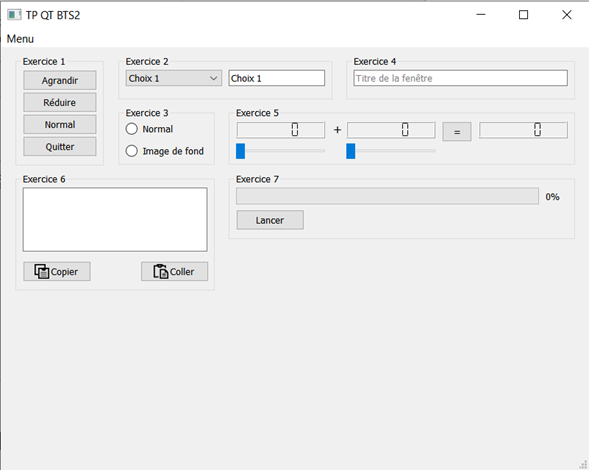
Créer une application graphique QT Widgets dont le titre est TP QT BTS2 et qui servira de projet pour l’ensemble des exercices.
Exercice 1
Objectifs
-
Créer des boutons
-
Leur affecter des actions avec le designer et avec le code.
-
Ajouter 4 boutons à l’aide du designer :
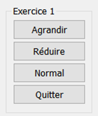
-
Utiliser l'association des signaux et slots ( F4 ) pour réaliser ces 3 actions :
-
Bouton Agrandir affiche la fenêtre en taille maximale.
-
Bouton Normal affiche la fenêtre dans sa taille d'origine
-
Bouton Quitter ferme l'application
-
-
Utiliser la connexion par le code pour réaliser l'action suivante :
- Bouton Réduire réduit la fenêtre dans la barre des tâches (MainWindow).
Exercice 2
Objectifs
-
Modifier un widget créé via le designer par le code
-
Faire communiquer deux widgets en utilisant le designer.
-
Ajouter un widget ComboBox et un widget LineEdit via le designer :
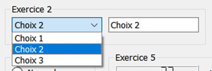
-
Remplir la ComboBox avec la méthode
addItem()de la classeQComboBoxdepuis le constructeur de laMainWindow(en utilisantui). -
Utiliser l'association des signaux et slots (F4) pour remplacer le texte du LineEdit par le texte de l’item sélectionné dans la ComboBox.
Création de signals et de slots
Exercice 3
Objectifs
Créer un slot et le connecter à des widgets.
-
Ajouter un GroupBox et y ajouter deux RadioButton.
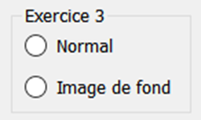
Suivant la sélection, une image sera affichée ou non au fond de la fenêtre.
-
Ajouter un slot
changeBackground()dans la classeMainWindowpour traiter la sélection desQRadioButton. La définition de la méthode sera traitée plus loin dans l’exercice. -
Par programmation, dans le constructeur de la
MainWindow, connecter (avec la primitiveconnect) le signalclicked()des deuxQRadioButtonau slotchangeBackground(). -
Ajouter une image en tant que ressource du projet :
-
Dans l’arborescence, cliquer-droit sur le nom du projet et choisir Add new…
-
Dans la fenêtre, choisir Qt > Qt Resource File et cliquer sur Choose…
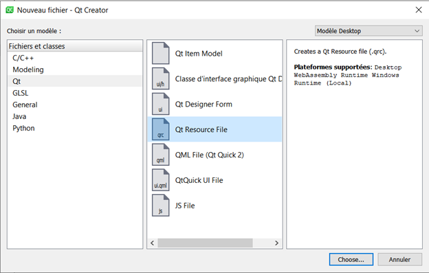
-
Nommer le fichier resources.qrc et valider les étapes suivantes
-
Double-cliquer sur le nouveau fichier
-
Cliquer sur Add Prefix
-
Modifier la valeur du Préfixe pour /images
-
Copier-coller une image (800x600) au choix dans le dossier du projet via l’explorateur Windows
-
Cliquer sur Add Files
-
Sélectionner l’image et valider
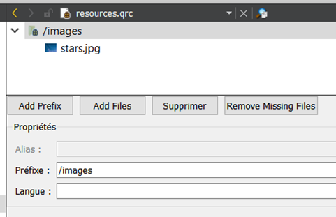
-
Sauvegarder le fichier resources.qrc
-
-
En fonction du
QRadioButtoncoché (checked), utiliser la méthodesetStyleSheet()de la classeMainWindowpour changer l’image de fond du widget central avec une des valeurs suivantes :
Exercice 4
Objectifs
Récupérer une valeur de l’IHM depuis un slot créé.
On veut pouvoir modifier le titre de la fenêtre après avoir saisi une valeur dans un widget LineEdit et appuyé sur Entrée.
Peut-on le faire directement depuis le designer ? Pourquoi ?
-
Ajouter un widget LineEdit.
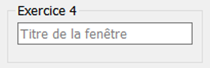
-
Créer un slot
changeWindowTitle()dans la classeMainWindow. -
Récupérer la valeur du widget
QLineEditet la passer à la méthodesetWindowTitle()de la classeMainWindow. -
Avec le designer, réaliser la connexion nécessaire pour répondre au besoin.
Si le slot créé n’apparaît pas dans la liste, il faut l’ajouter en utilisant le bouton Editer… de la fenêtre Configurer connexion.
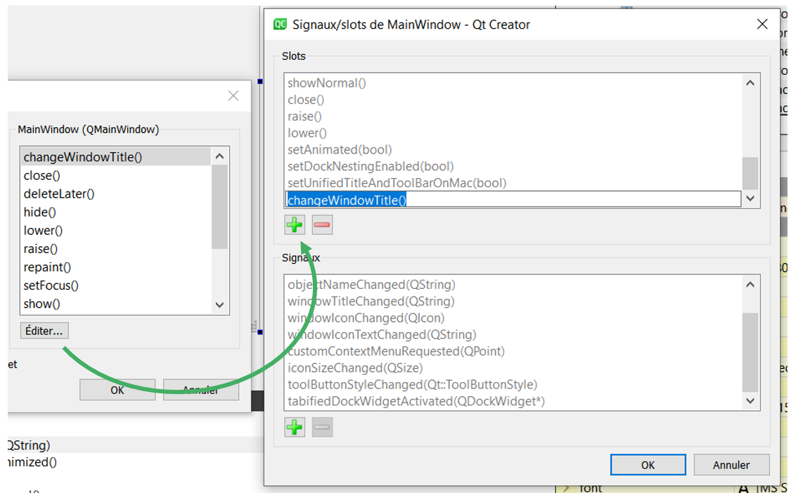
Repartir du bon pied
Projet avec les 4 premiers exercices : 📂TP_QT_BTS2 0.4
Exercice 5
Objectifs
- Passer des valeurs d’un widget à un autre
- Créer et émettre un signal
On souhaite réaliser une calculatrice "simple" :
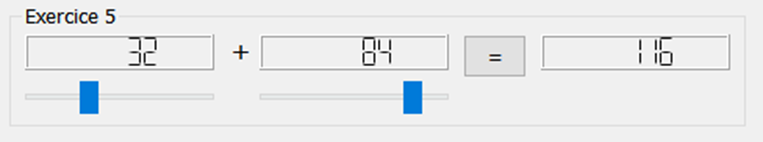
-
Elle est composée de deux sliders qui pilotent l’affichage de deux LCDNumber.
-
Le + central est affiché à l’aide d’un label.
-
L’affichage sombre des LCDNumber est réalisé en passant la propriété segmentStyle à Flat.
Réaliser cette première partie de l’exercice avec le designer.
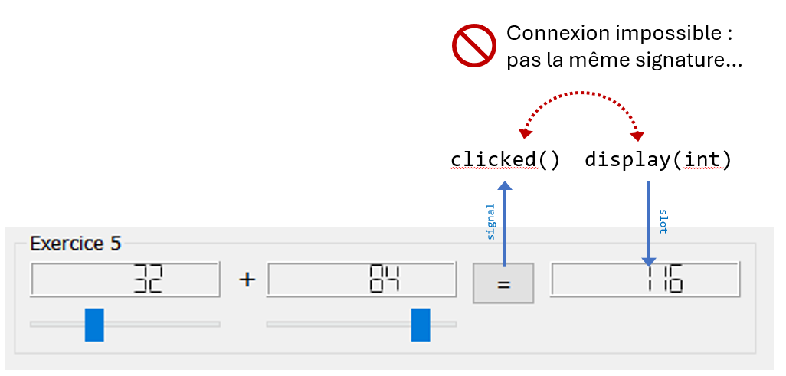
Au clic sur le bouton =, la somme des deux valeurs de sliders doit s’afficher dans un troisième LCDNumber. Toutefois, le signal clicked() de la classe QPushButton n’a pas de paramètre de type entier et permet encore moins d’envoyer deux valeurs qui ne lui appartiennent pas.
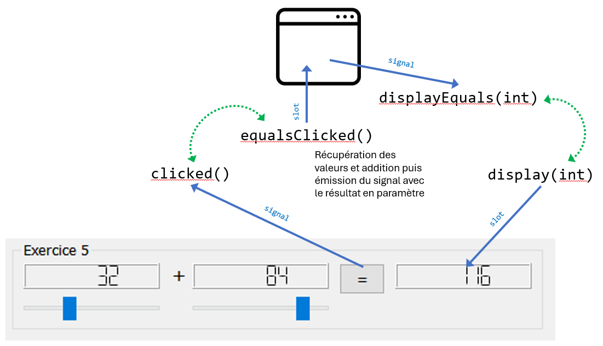
Le clic sur le QPushButton va devoir déclencher un slot (à créer) dans la classe MainWindow qui va lui-même émettre un signal au bon format (à créer) qui sera connecter au slot display(int) du troisième QLCDNumber.
Réaliser cette seconde partie pour terminer la « calculatrice ».
Exercice 6
Objectifs
- Utiliser les slots de manipulation de texte.
- Personnaliser un widget avec une image
-
Ajouter sur la fenêtre un widget Textedit et deux boutons Copier et Coller pour copier ou coller du texte dans notre boite de texte.
Les icones sont modifiables dans la fenêtre des propriétés via l’attribut « Marche normale » de l’attribut icon des
QAbstractButton. On peut trouver de nombreuses icones libres de droits sur Internet, par exemple sur le site iconmonstr.com. -
Ajouter une icône aux deux boutons en important au préalable deux icones dans le fichier resources.qrc.
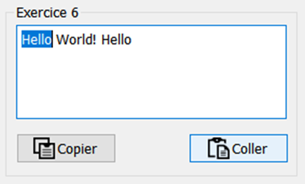
-
Utiliser l'association des signaux et slots ( F4 ) pour finir l’exercice.
Exercice 7
Objectifs
Comprendre le fonctionnement des progressBar.
-
Ajouter un widget Progress bar et un bouton Lancer.
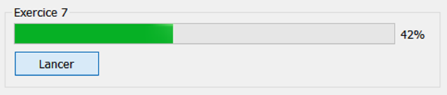
Il va falloir dans le slot du bouton faire une boucle allant de 0 à 100 et qui sera temporisée à chaque tour pendant 100ms. Pour temporiser le programme, on utilisera la méthode
msleep(int)de la classeQThreadqui suspend le thread. -
Lancer la progression de la barre en prenant comme unité le centième de seconde.
Aller plus loin
Temporiser avec QThread::msleep() met en sommeil le thread de l'application et bloque l'utilisation de l'IHM 😥
Etudier l'utilisation de la classe QTimer et l'implémenter pour ne pas paralyser l'application.
Repartir du bon pied
Projet avec les 7 premiers exercices : 📂TP_QT_BTS2 0.7
Exercice 8
Objectifs
Ajouter une action dans le menu.
-
Ajouter un menu sur la fenêtre. Ce menu pour l'instant n'a que l'option Quitter qui fermera notre application.
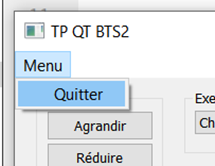
-
Connecter le signal
triggered()sur l'action Quitter du menu au slotclose()de l'application.
Exercice 9
Objectifs
-
Surdéfinir une fonction d’une classe ascendante
-
Implémenter une classe du framework en s’aidant de la documentation
L’application peut à présent être fermée depuis le menu, depuis la croix en haut à droite et depuis le bouton créer dans l’exercice 1. On souhaite prévenir toute fermeture accidentelle par l’ajout d’une confirmation avant fermeture. L’implémenter dans chacun des trois mécanismes mis en place ne serait pas très pertinent.
Qt a prévu ce genre de besoin en créant une méthode closeEvent() dans la classe QWidget. Cette dernière centralise les appels à la fermeture de fenêtre. Pour ajouter le comportement attendu, il faut surdéfinir cette fonction dans notre MainWindow.
-
Surdéfinir la méthode
QWidget::closeEvent()dans laMainWindow.Le paramètre
eventde la méthode permet d’agir sur la fermeture en l’acceptant ou l’ignorant à l’aide des méthodesaccept()etignore(). De base, l’implémentation deQWidget::closeEvent()accepte toujours l’événement.Pour savoir si on accepte ou non la fermeture de la fenêtre, on va utiliser une
QMessageBoxdont la documentation officielle donne des exemples d’implémentation très complet.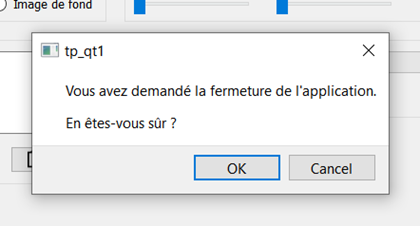
-
Réaliser la fonctionnalité à l’aide des éléments ci-dessous et de la documentation de Qt.
Exercice 10
Objectifs
-
Ajouter une fenêtre à l’application
-
Manipuler des éléments graphiques
Dans ce dernier exercice, on souhaite ajouter un nouveau menu qui permettra d’ouvrir une fenêtre dans laquelle on pourra manipuler une forme graphique (rectangle ou cercle).
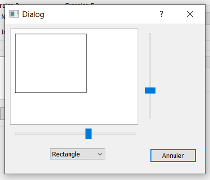
-
Ajouter au projet une nouvelle classe d’interface graphique Qt Designer (Dialog)
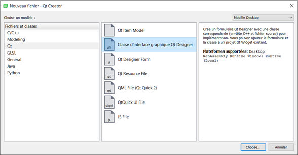
-
En fonction de la version de Qt, le générateur peut proposer de choisir un type de fenêtre : choisir une fenêtre sans bouton et valider les étapes suivantes.
-
Ajouter un bouton « Annuler » sur la nouvelle fenêtre et faire en sorte qu’il ferme la fenêtre quand on clique dessus.
Deux slots permettent de fermer une fenêtre de type
QDialog:accept()etreject(). -
Ajouter une action Figures dans le menu Menu de la
MainWindow. -
Créer un slot
showDialog()dans laMainWindowet le déclencher quand on clique sur le menu Figures. -
Pour ouvrir la nouvelle fenêtre, il faut créer un objet de la classe de Dialog et lancer sa méthode exec().
Ouvrir la nouvelle fenêtre au clic sur le menu Figures.
-
On souhaite afficher un rectangle dans un widget
QGraphicsViewet piloter sa largeur et sa hauteur via deux sliders disposés respectivement en dessous et sur la droite de ce widget.Ajouter les trois widgets avec le designer.
-
Pour afficher le rectangle, il faut ajouter un objet
QGraphicsScenedans le widget GraphicsView et y dessiner un rectangle avec la méthodeaddRect().Exemple de code :
// Création de la scène QGraphicsScene * scene = new QGraphicsScene(ui->graphicsView); scene.setSceneRect(0, 0, 256, 192); ui->graphicsView->setScene(scene); // Création du rectangle QGraphicsRectItem * rectangle = scene->addRect(10, 10, 80, 50);Afficher un rectangle dans le widget GraphicsView.
-
Pour modifier les dimensions du rectangle, il faut redéfinir ses dimensions à l’aide de la méthode
setRect().Piloter les dimensions du rectangle avec les sliders.
-
Ajouter un widget ComboBox qui permet de permuter l’affichage entre un rectangle et une ellipse.
Résultat final 🎉
Projet avec les 10 exercices : 📂TP_QT_BTS2 1.0